集成学习（ensemble learning）主要分为 Bagging 和 Boosting 两种。
Bagging —— 民主投票
Bagging 的思路是所有基础模型都一致对待，每个基础模型手里都只有一票。然后使用民主投票的方式得到最终的结果。大部分情况下，经过 Bagging 得到的结果方差（Variance）更小。
Boosting —— 挑选精英
Boosting 和 Bagging 最本质的差别在于他对基础模型不是一致对待的，而是经过不停的考验和筛选来选出“精英模型”，然后给“精英模型”更多的投票权，对于表现不好的基础模型则给较少的投票权，然后综合所有人的投票得到最终结果。大部分情况下，经过 Boosting 得到的结果偏差（Bias）更小。
偏差（Bias）和 方差（Variance）
- 方差 度量了不同训练集（样本数相同）所产生的模型性能的变化。刻画了模型（对数据扰动）的稳定性。
- 偏差 度量了该模型的期望预测与真实结果的偏离程度。刻画了模型本身的拟合能力。
为了使模型泛化性好，偏差和方差都要尽可能的小，模型能充分拟合数据并且应对数据扰动较为稳定。通常，正确选择模型的复杂度可以减小偏差和方差影响。
- 模型复杂度太低，容易欠拟合，模型偏差太大。
- 模型复杂度太高，容易过拟合，模型方差太大。
其实，减小偏差、方差的思路分别对应避免欠拟合、过拟合的思路。
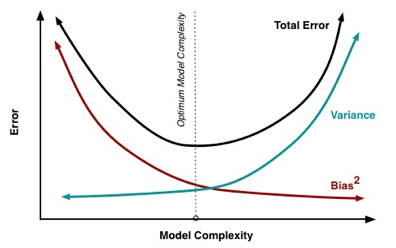
上图可知，模型的偏差、方差随模型复杂度的增加分别单调递减、递增，而误差则先减后增。
从 Bias - Variance 角度看两类集成学习
1. Bagging 主要关注降低 Variance
不同的训练集（数据量相同）训练出不同的基模型，所以各自拟合能力都差不多，即偏差都差不多。投票平均后的模型偏差比较平均，方差会降低，相当于总模型是由不同份的训练集训练的。所以为了防止方差过低导致的欠拟合，每个基模型的复杂度要尽可能高（如：增加每棵决策树的深度）。
2. Boosting 主要关注降低 Bias
层层递进的超级学习者，基模型的拟合能力不断地变强，偏差会降低。由于训练数据始终是同一份，所以方差不会有太大变化。所以为了防止偏差过低导致的过拟合，基模型的复杂度要尽可能低（如每颗决策树只取树桩）。
Bagging 和 Boosting 区别
1）样本选择
Bagging：训练集是在原始集中有放回选取的，从原始集中选出的各轮训练集之间是独立的。
Boosting：每一轮的训练集不变，只是训练集中每个样例在分类器中的权重发生变化。而权值是根据上一轮的分类结果进行调整。
2）样例权重
Bagging：使用均匀取样，每个样例的权重相等
Boosting：根据错误率不断调整样例的权值，错误率越大则权重越大。
3）预测函数
Bagging：所有预测函数的权重相等。
Boosting：每个弱分类器都有相应的权重，对于分类误差小的分类器会有更大的权重。
4）并行计算
Bagging：各个预测函数可以并行生成
Boosting：各个预测函数只能顺序生成，因为后一个模型参数需要前一轮模型的结果。
Bagging
Bagging 是一种并行式的集成学习方法，多个基模型的训练之间无前后顺序，无依赖，可以同时进行。
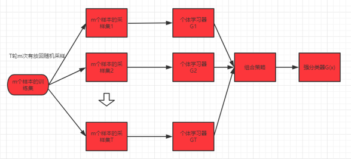
由上图可知，Bagging 是将多个基模型组合进行预测，其中每个基模型都需要一份数据去训练。Bagging 又被称作 Bootstrap Aggregating ，主要有两个核心问题：
- 通常我们只有一份有限的数据，如何利用它产生多份“新数据”呢？（Bootstrap 抽样）
- 预测时如何使用训练出的多个模型？（Aggregating 预测）
Bootstrap 抽样
在已有的数据集上通过“有放回”采样构造出多个新数据集。具体：有包含 N 个数据的训练集 D，现在要构造出 k 个新训练集 { D1 , … , Dk } 。对于每个新训练集 Di ，都是从原有训练集 D 中有放回地采样 N 次得到 N 个数据。因为是有放回的随机采样，这 k 个新训练集是相互独立的。
另外可以算出，对于一份训练集，某个数据没被采样过的概率：（对于一份新训练集，N 次有放回采样中，某数据被选中的概率 1/N，没被选中则为 1 - 1/N）
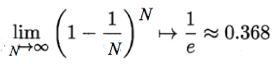
由此可知每份训练集有 36.8 % （～1/3）的数据没被抽到过。
Aggregating 预测
通过上述的抽样法可以得到多份训练集，每次使用一份训练一个模型，k 个训练集共得到 k 个基模型。利用这 k 个基模型对测试集进行预测，将 k 个预测结果进行聚合（aggregation）。聚合通常分为两种情况：
- 分类问题：将上步得到的 k 个模型采用投票的方式得到分类结果
- 回归问题：计算上述模型的均值作为最后的结果。（所有模型的重要性相同）
Bagging 主要降低不同模型的 Variance，对 Bias 无明显作用。因此，适用于 High Variance & Low Bias 的模型，例如决策树（每次切割方式都不同，且训练集不断减少导致模型对数据比较敏感，因此方差大）。
Out-of-Bag（OOB）误差
Bagging 最大的优势是我们可以不通过交叉验证而求得测试误差。平均而言，每个基模型使用了 2/3 的训练集，而剩下 1/3 的没被用于训练的样本就可以称为 out-of-bag (OOB) 样本。在 validation 中，使用验证集可以检测单个模型的性能，而在 Bagging 需要检测的是多个基模型组合而成的模型的性能。具体做法：
1. 对于每个样本，先看看它在哪些训练集上（约1/3训练集）是作为 OOB 样本，用这些训练集得到的基模型组合成一个 “小 Bagging” 对该样本进行预测（以多数投票作为该样本的分类结果）；
2. 得到的预测误差（误分个数占样本总数的比率）记为该 “小 Bagging” 的预测误差 erri ；
3. 计算每个数据作为 OOB 样本时的预测误差，求和再求平均，即为整个 Bagging 的预测误差 EOOB
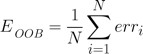
例如，如下图所示的 Bagging 有5个基模型，样本集合有中 N 个数据。数据 2 在基模型 2～5 上都没有被选中，所以是它们的 OOB 样本，因此数据 2 的预测误差 err2 由基模型 2～5 组合计算。数据 5 是基模型 2 和 5 的 OOB 样本，其预测误差由这两个基模型组合得到 err5 。最后求所有数据的预测误差之和的平均。
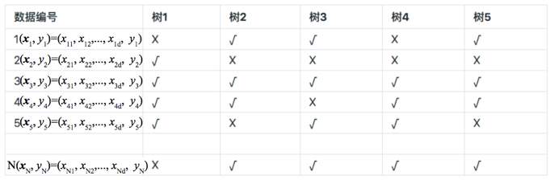
通常称 OOB Err 为 Bagging 的 Self-Validation，是一种无偏估计。相较于原来的 Validation 省去了多次训练的步骤。
随机森林（Radom Forest, RF）
随机森林是 Bagging 算法的一个特例进阶版。特例是因为基模型是 Decision Tree，进阶是因为在 Bagging 的样本随机采样基础上，加上了特征的随机选择。
Bagging + Decision Tree = Radom Forest
基本步骤
- 样本采样：确定树模型的数量。每棵树的训练集是通过 Bootstrap 抽样所得。即原样本中有 2/3 的数据用于训练树，另 1/3 的数据会作为该树模型的 OOB 样本。
- 特征选取：训练每棵树模型时，每次树分裂时都要进行随机特征选取。假设特征维度为 M，需要指定一个常数 m（m < M），然后随机地从 M 个特征中选取具有 m 个特征的特征子集，每次树进行分裂时，从这 m 个特征中选择最优的作为划分特征。
- 预测：每棵树都有一个预测值，对于分类问题，基于多数投票法得到预测结果；对于回归问题，取所有基模型输出的平均值。
此外，随机森林中的每棵树都尽可能最大程度地生长，并且没有剪枝过程。
特征选取
随机森林的模型性能（错误率）与以下两个因素有关：
- 森林中任意两棵树的相关性：相关性越大，模型的性能越弱（错误率越高）
- 森林中每棵树的分类能力：每棵树模型的性能越强，整个森林的错误率越低
减小特征选取的个数 m ，树的相关性和预测性能也会相应的降低。所以关键问题是如何选择最优的 m（或者是范围）。
特征的重要性
对于某一特征，如果用另外一个随机值替代它的取值之后，模型的的表现比之前更差，则表明该特征比较重要，不能随便替换。相反，如果替代前后差别不大，则该特征没那么重要。
所以，我们可以通过 OOB 样本去计算特征的重要性。
- 首先计算 OOB 误差 EOOB
- 假设要知道第 i 个特征的重要性，将所有数据中的第 i 个特征的取值重新洗牌，再计算 OOB 误差 EOOB (p)
- 第 i 个特征的重要性 = | EOOB - EOOB (p)）|
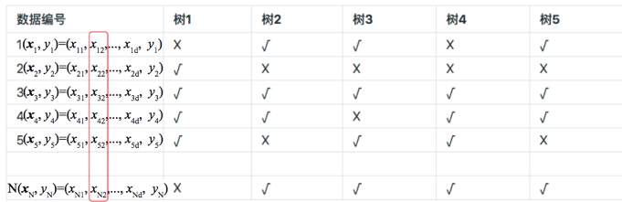
例如，上图中若要计算第 2 个特征的重要性，将 N 个样本的第 2 个特征取值全部洗牌，再计算当前洗牌后的 OOB 误差，再和洗牌前的误差相比，变化越大说明该特征越重要。
因此，特征选择的步骤如下：
1）计算每个特征的重要性，并按降序排序
2）确定要剔除的比例，依据特征重要性剔除相应比例的特征，得到一个新的特征集
3）用新的特征集重复上述过程，直到剩下 m 个特征（m 为提前设定的值）。
4）根据上述过程中得到的各个特征集和特征集对应的 OOB 误差，选择 OOB 误差最低的特征集
Boosting
Boosting 是一种串行的工作机制，即个体学习器的训练存在依赖关系，必须逐步序列化进行。Boosting 算法框架是由加法模型和前向分步算法构成。其中，加法模型（K 个基模型加权组成）
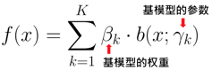
给定损失函数时，加法模型对应的优化目标较为复杂
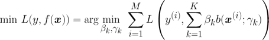
前向分布算法简化了上述优化目标，即每一步只学习一个基函数及其系数，逐步逼近最终的加法模型，这样每步也就只需要优化本轮的损失函数
前向分步算法将同时求解从 k = 1 ~ K 的所有参数 βk ， γk 的优化问题简化为逐次求解各个 βk ， γk 的优化问题（每轮通过最小化损失函数更新模型的相关参数，用于下一轮计算）。
Boosting 中 AdaBoost 和 提升树（Boosting Tree）系列 算法最具代表。
- Adaboost = Boosting + 损失函数是指数函数（基模型任意）
- 提升树 = Boosting + 基模型是决策树（损失函数任意）
其中提升树模型主要有
- BDT：二叉分类树 + 指数损失（加权学习），等价于 Adaboost 当基模型是二叉分类树
- BRT：二叉回归树 + 平方误差损失（计算残差，其实也是负梯度）
- GBDT：二叉分类树 + 普通损失函数（计算负梯度）
- GBRT：二叉回归树 + 普通损失函数（计算负梯度）
如果把 GBRT 的损失函数选为平方误差损失，则退化为 BRT，因为平方损失函数的负梯度就是残差。
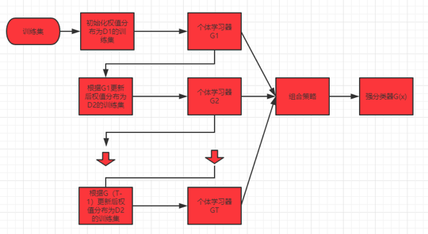
AdaBoost
大致流程
- 每轮训练改变基模型的权重。提高那些错误率小的基模型的权重，减小错误率高的基模型的权重
- 每轮训练改变训练数据的权值或概率分布。提高那些前一轮的误分数据的权值，减小前一轮正确分类的数据的权值，从而加强模型对误分数据的预测性能（下一轮将更注重对误分数据的纠正）
- 通过加法模型将基模型进行线性的组合
核心问题
- 如何计算学习误差率 e
- 如何得到弱学习器权重系数 α
- 如何更新样本权重 D
- 使用何种结合策略
具体计算步骤
给定包含 N 个数据的训练集 T = { ( x(1) , y(1) ) , ( x(2) , y(2) ) , … , ( x(n) , y(n) ) }，标签为 $y_{i} \in {-1, 1}$。
1） 初始化训练集的权重。其中每个数据最开始时都被赋予相同的权值：1 / N 。
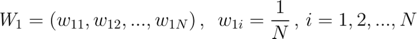
2） 进行多轮迭代，迭代次数用 m = 1，2，…，M 表示。
（a）使用具有权值分布为 Wm 的训练数据集学习，得到该轮的基模型 Gm 并计算其误差率 em（该轮模型在训练集上得到的误分类数据的权值和）
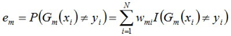
（b）计算基模型 Gm 的权重系数（在最终模型中所占比重）
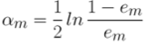
由上式可知，em ≤ 1/2 时，αm ≥ 0，且误差率 em 越小，该轮基模型的权重 αm 则越大。
（c）更新训练集的权重，用于下一轮训练。
其中，每个数据的权重为
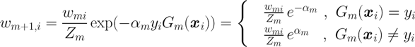
Zm 是所有数据权重之和，即规范化因子（使得 W 成为训练集的概率分布）
3） 重复步骤 2），得到 M 个基模型以及对应模型的权重 αm ，组合这些基模型
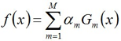
最终的分类模型为
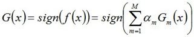
那么，如何得到基模型的权重 αm 和每轮更新的数据权重 wm + 1 , i 的计算公式呢？
权重更新公式具体推导
首先，AdaBoost 算法使用加法模型，损失函数为指数函数，学习算法使用前向分步算法（每一轮训练的新模型是基于上一轮的模型）。AdaBoost 中的加法模型
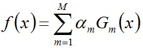
前向分步算法的损失函数为指数函数
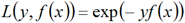
训练目标是每轮迭代过程中将当前基模型在训练集上的损失函数最小化（前向分步算法的特点）
由于前向分步算法可知当前第 m 轮的基模型与前 m-1 轮的基模型的关系
因此，最小化目标写为
将上式进一步转换，令
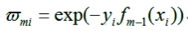
则有
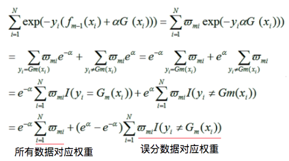
接下来对上式求 αm 的偏导令为 0
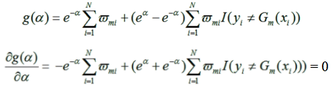
得到参数 αm 为
其中，误分率 em
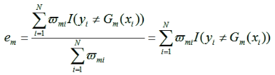
结合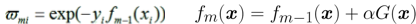得到
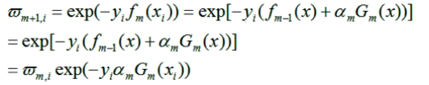
写成规范化形式后
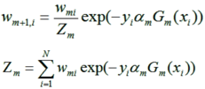
至此，参数 wm+1, i 求解完毕
AdaBoost 的训练误差界
AdaBoost 算法能在学习过程中不断减少训练误差（在训练数据集上的误分率），其训练误差界由下式保证
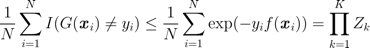
证明过程
1）上式前半部分（不等式）证明
2）后半部分等式证明：
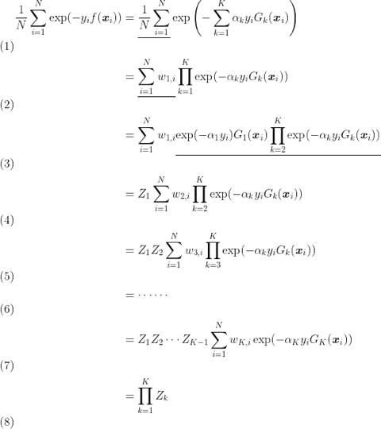
其中，用到下面两个变换
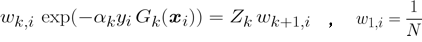
对于二分类问题，进一步的 AdaBoost 的训练误差上界
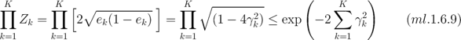
其中，
对于 Adaboost 多元分类算法，原理和二元分类类似，最主要区别在基模型的权重系数上。比如 Adaboost SAMME 算法，其基模型的权重
其中 R 为类别数。当二元分类时，R = 2，则与常规 AdaBoost 算法的权重公式一致。
AdaBoost 回归
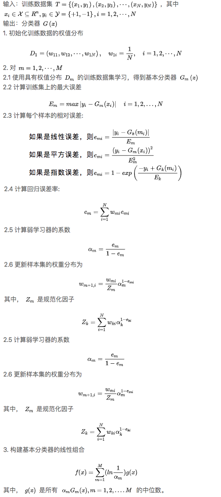
AdaBoost 正则化
将加法模型中每轮的基模型前乘上一个步长 v
其中，v 的取值范围为 0 < v ≤ 1。较小的 v 意味着我们需要更多的基模型或迭代次数。通常我们用步长和迭代最大次数一起来决定算法的拟合效果。
AdaBoost 总结
理论上任何学习器都可以用于 AdaBoost。但使用最广泛的 AdaBoost 基模型是决策树和神经网络。对于决策树，AdaBoost 分类用了 CART 分类树，而 AdaBoost 回归用了 CART 回归树。
优点
Adaboost作为分类器时，分类精度很高，构造简单，不容易过拟合。
缺点
对异常点敏感：指数损失存在的一个问题是不断增加误分类样本的权重（指数上升）。如果数据样本是异常点（outlier），会极大的干扰后面基本分类器学习效果；
模型无法用于概率估计（对于分类问题，模型中的指数形式不属于任意一种概率密度形式）
GBDT
AdaBoost 算法是更新训练集的权重（最小化指数损失函数得到的结果）进行下一轮迭代。GBDT 也是迭代计算，使用了前向分步算法，但是基模型限定了使用 CART 回归树模型，每轮迭代的目标是找到一个 CART 回归树基模型使得本轮的损失最小。GBDT 中用损失函数的负梯度来拟合本轮损失的近似值，进而拟合一个 CART 回归树。GBDT 是由提升树发展而来，先看看什么是提升树。
提升树（Boosting Tree）
提升树的思想就是每轮建立一个基模型来拟合最终模型未完全拟合的真实样本的残差。
举个例子：假如有个人30岁，我们首先用20岁去拟合，发现损失有10岁，这时我们用6岁去拟合剩下的损失，发现差距还有4岁，第三轮我们用3岁拟合剩下的差距，差距就只有一岁了。如果我们的迭代轮数还没有完，可以继续迭代下面，每一轮迭代，拟合的岁数误差都会减小。
提升树模型是以二叉（CART）树为基模型，采用加法模型（即基模型的线性组合）得到
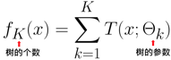
利用前向分步算法，基于前一轮的模型计算本轮迭代的模型
通过最小化损失函数来决定本轮基模型的参数
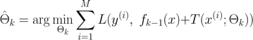
不同问题的提升树学习算法，其主要区别在于损失函数不同。例如，当提升树算法处理二分类问题（使用指数损失函数），相当于 AdaBoost 算法基模型是 CART 分类树时。下面再讲一下回归问题。
对于训练集
若将输入空间 𝜒 划分成 J 个互不相交的区域 { R1，R2，⋯，RJ } ，并且在每个区域上确定输出的常量 cj ，那么基（树）模型可以表示为
其中，J 为叶节点个数（表现了单棵树的复杂度），树的参数则为
树的参数则是我们每轮训练需要求解的。
具体步骤
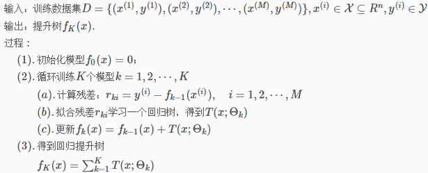
拟合残差：计算每个数据 x 的残差值，并作为本轮新的训练集的标签值，去训练本轮的基树模型。
提升树算法每轮都要拟合真实值与预测值的残差，而这是因为当损失函数为平方损失时，对优化目标求一阶导数后恰好为残差。我们的优化目标一直是损失函数（无论带正则与否）最小化，对于任意损失函数，其负梯度才是最佳优化方向，每轮中需要拟合的应为损失函数的负梯度值，即梯度提升算法的思想。
梯度提升（Gradient Boosting）
核心思想：提升树中计算残差的公式 ⇒ 用损失函数负梯度求近似残差的公式
这样，残差的计算不再依赖于损失函数的形式，该算法更加具有通用性。其实，梯度提升算法和梯度下降法的思路相似：优化目标都是损失函数最小化，梯度提升中优化的是函数 $f(x)$ ，每轮得到的函数增量要去拟合这些负梯度值（训练新的基模型），然后更新模型（相当于最终模型又朝着最优方向迈进一步）。
- 传统梯度下降法：在参数空间进行搜索，找到最优参数。
- 树模型的梯度提升法：在函数空间进行搜索，找到最优函数。所谓“提升”是指模型整体精度提升。
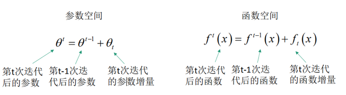
GBDT 是基于梯度提升算法的，使用的决策树是 CART 回归树，无论处理回归问题还是二分类以及多分类，GBDT 都是使用 CART 回归树。为什么不用 CART 分类树呢？因为 GBDT 每次迭代要拟合的是梯度值，是连续值所以要用回归树。
GBDT 回归
具体步骤
输入： 训练集
并且给定损失函数 $L (y, f(x))$
输出： 回归提升树 $f_{\kappa}(x)$
1）初始化模型，得到使损失函数极小化的常数值（是一个只有根结点的树）
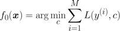
2）迭代训练 K 个模型 k = 1，2，⋯ ，K
（a）计算负梯度：对于 M 个样本 i = 1，2，⋯ ，M
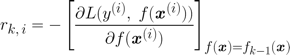
（b）将求得的残差作为每个数据对应的新标签值，利用新数据集 $(x_{i}, r_{k,i}) , ,, , (i = 1,2,…,M)$ 训练第 k 棵回归树 ，其叶节点区域为 $R_{k,,j} ,, , (j = 1,2,…,J)$， J 为该树的叶节点数。
（c）通过极小化损失函数，计算不同叶节点区域 j = 1，2，…，J 对应的节点值
（d）更新模型
3）经过多次迭代后，得到最终的模型
GBDT 分类
GBDT 的分类算法从思想上和 GBDT 回归算法没有区别，但是由于样本输出不是连续的值，而是离散的类别，导致我们无法拟合输出的误差。
解决方法主要有两个：
1）用指数损失函数，此时 GBDT 退化为 AdaBoost 算法。
2）用类对数损失函数（逻辑回归），即用的是类别的预测概率值和真实概率值的差来拟合损失。
当使用对数损失函数时，有二分类和多分类的区别。
GBDT 二分类
对于二元 GBDT，如果用类似逻辑回归的对数损失函数（此处 𝑦 ∈ {−1, +1}，而标准的逻辑回归中的对数损失的标签是 𝑦 ∈ {0, 1} ）
则对应的负梯度误差为
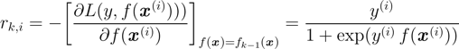
对于生成的决策树，我们各个叶子节点的最佳负梯度拟合值为
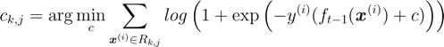
由于上式比较难优化，我们一般使用下式作为近似值
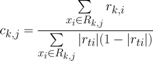
除了负梯度值不同以及叶节点的最佳负梯度拟合方式不同之外，其它都与 GBDT 回归算法相同。
GBDT 多分类
这里直接截取了刘建平老师博客的公式
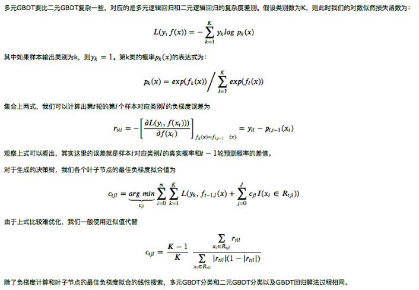
GBDT 常用损失函数
分类问题
1）指数损失（负梯度推导见 AdaBoost）：
2）对数损失（负梯度推导见 GBDT 分类）：
回归问题
1）平方损失：
2）绝对损失：
对应负梯度值为
3）Huber 损失：是均方差和绝对损失的折衷产物，对于远离中心的异常点，采用绝对损失，而中心附近的点采用均方差
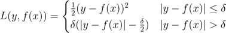
对应负梯度为
4）分位数损失：对预测值高估和低估有不同比重的惩罚。(了解)
其中 𝜃 为分位数（超参），𝜃 越大，公式前半部分比重越大，表示对预测值“低估”的惩罚越大，反之对“高估”的惩罚越大。下图中横坐标越正越高估，越负越低估。
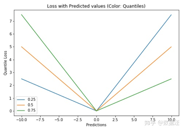
对应的负梯度为
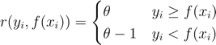
对于 Huber 损失和分位数损失，主要用于健壮回归，也就是减少异常点对损失函数的影响。
GBDT 正则化
方法 1
和 Adaboost 类似的正则化，即步长（learning rate）。通过减少每棵树的学习输出值，削弱每棵树的影响，让后面的树有更大的学习空间，理论上是增加了树的个数，能够防止过拟合。
方法 2
通过子采样比例（Subsample），取值为 (0, 1] 。注意这里的子采样是不放回抽样。如果采样比例为1，则全部样本都使用，等于没有使用子采样。如果取值小于1，则只有一部分样本会去做 GBDT 的决策树拟合，这样可以减少模型的方差（数据扰动），即防止过拟合，但由于可能会增加模型的偏差，因此采样比例不能太低，推荐在 [0.5, 0.8] 之间。
使用子采样的 GBDT 有时也称作 随机梯度提升树（Stochastic Gradient Boosting Tree，SGBT）。由于使用了子采样，程序可以通过采样分发到不同的任务去做 Boosting 的迭代过程，最后形成新树，使得 Boosting 可以并行学习。
方法 3
对于基树模型即 CART 回归树进行正则化剪枝。
方法 4
“Early Stopping”：Early Stopping 是机器学习迭代式训练模型中很常见的防止过拟合技巧，具体的做法是选择一部分样本作为验证集，在迭代拟合训练集的过程中，如果模型在验证集里错误率不再下降，就停止训练，也就是说控制迭代的轮数（树的个数）。在 sklearn 的 GBDT 中可以设置参数 niter_no_change_ 实现 early stopping。
GBDT 总结
优点
- 可以灵活处理各种类型的数据，包括连续值和离散值。
- 在相对少的调参时间情况下，预测的准确率也可以比较高。这个是相对 SVM 来说的。
- 使用一些健壮的损失函数，对异常值的鲁棒性非常强。比如 Huber 损失函数和 Quantile 损失函数。
缺点
由于弱学习器之间存在依赖关系，难以并行训练数据。不过可以通过 SGBT 达到部分并行（针对单颗树特征处理和选择的并行（特征排序））。
需要注意的是，在每次生成新的基模型中用到的损失函数是按照树模型自身的损失函数，比如构造 CART 分类树是基尼指数，CART 回归树是平方误差。而对于整个模型的优化方向是求前轮模型的负梯度。
XGBoost
1. 算法本身的优化：在算法的基模型选择上，GBDT 只支持决策树，而XGBoost 可以支持多种，且损失函数上还加上了正则化。在算法的优化方式上，GBDT 的损失函数只对误差部分做负梯度（一阶泰勒）展开，而 XGBoost 损失函数对误差部分做二阶泰勒展开，更加准确。
2. 算法运行效率的优化：对每个弱学习器，比如决策树建立的过程做并行选择，找到合适的子树分裂特征和特征值。在并行选择之前，先对所有的特征的值进行排序分组，方便前面说的并行选择。对分组的特征，选择合适的分组大小，使用 CPU 缓存进行读取加速。将各个分组保存到多个硬盘以提高 IO 速度。
3. 算法健壮性的优化：对于缺失值的特征，通过枚举所有缺失值在当前节点是进入左子树还是右子树来决定缺失值的处理方式。算法本身加入了 L1 和 L2 正则化项，可以防止过拟合，泛化能力更强。
XGBoost 的优化目标
第 k 轮的模型由前 k -1 轮的模型加上本轮需要训练的基模型 h 组成
对应的损失函数（原优化目标）
加入正则化项，优化目标变成
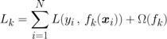
其中，𝛺 表示模型的复杂度，由前向分步算法知
上式中第 k -1 个模型的复杂度是已知的，即为常数。此外，第 k 个基模型的复杂度为
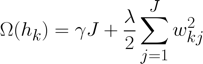
对于这里的 J 是叶子节点的个数，而 𝑤k𝑗 是第 j 个叶子节点的最优值，类比 GBDT 的 ck𝑗 ，只是 XGBoost 的论文里用的是 𝑤 表示叶子区域的值，因此这里和论文保持一致。
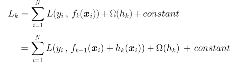
我们对原损失函数在第 k - 1 轮函数上进行二阶泰勒展开，首先泰勒二阶公式（在 x0 处展开）为
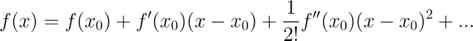
令 ∆x = x - x0 ，上式改写为

若我们将原损失函数中的第 k 轮模型类比
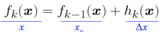
即 hk 为函数增量，则 $L (y, f_{k})$ 在 $L (y, f_{k-1})$ 上的二阶泰勒展开为
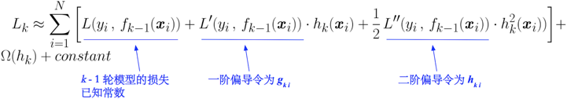
其中，一、二阶偏导数分别为
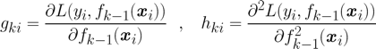
去掉所有的常数项后，我们的优化目标变成
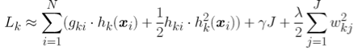
由于每个决策树的第 j 个叶子节点的取值最终会是同一个值 𝑤k𝑗 ，即训练集按照叶节点进行分组
把每个叶子节点区域样本的一阶/二阶导数之和分别表示如下
- Gk𝑗 ：叶子结点 j 所包含样本的一阶偏导数累加之和，是一个常量
- Hk𝑗 ：叶子结点 j 所包含样本的二阶偏导数累加之和，是一个常量
最终得到第 k 轮迭代需要优化的目标
如何优化目标
有了优化目标后，如何一次求解出决策树最优的所有 J 个叶节点区域和每个叶节点区域的最优解 𝑤k𝑗 ，可以把它拆分成2个问题：
1）如果已经求出了第 k 个决策树的 J 个最优的叶子节点区域，如何求每个叶子节点区域的最优解 𝑤k𝑗
2）对当前决策树做子树分裂时，如何选择划分特征和划分特征值，使得优化目标 𝐿k 最小
对于第一个问题，直接令 𝐿k 对 𝑤k𝑗 求导并令导数为 0 ，这样我们得到叶节点区域的最优解 𝑤*k𝑗
将所有叶节点区域的最优解代入目标函数中，优化目标进一步变成
对于第二个问题，首先，如何确定划分特征。
XGBoost 采用贪心法进行节点的分裂。当建立第 k 棵树时，对树中的每个叶节点尝试进行分裂，得到左右两个子叶节点。每次分裂后，我们需要检测这次分裂是否会给损失函数带来增益，增益的定义如下：
假设当前节点左/右子树的一阶/二阶导数之和分别为 𝐺𝐿 ，𝐻𝐿 ，𝐺𝑅 ，𝐻𝑅 ，则上式进一步写成
其中，由于分裂成左右两个节点，所以节点数由当前节点总数 J 变成分裂后总数 J + 1。如果增益 > 0，即分裂后，目标函数值下降（损失变小），则按照该特征进行的分裂为有意义分裂，否则该特征直接被 pass。由于增益越大越好，上式经整理后，我们的优化目标为
其次，对于某个划分特征拥有多个特征值时，如何确定其划分特征值（类似于CART树的多特征处理）。遍历当前节点中数据的每个特征，对每个特征，按特征值大小将特征值排序。线性扫描，找出每个特征的最佳分裂特征值。最终要在所有特征中找出最佳（分裂后增益最大）的划分特征及划分特征值。
也就是说，对于第二个问题，建立本轮基树模型时，不再使用原有的 CART 回归或分类树的划分特征的标准，而采用上述的方法进行划分特征及对应划分特征值的选择。
XGBoost 算法流程
补充
1）上述步骤中，每次分裂前默认样本都放在右子树，所以 𝐺𝐿 ，𝐻𝐿 初始为 0，不断的从右子树尝试放样本进入左子树中以计算增益。若默认样本都放在左子树，则 𝐺𝑅 ，𝐻𝑅 初始为 0 。
2）XGBoost 的分数即为分裂前后的损失的增益，默认是 0 ，按照所有特征以及对应的特征值（排序）进行计算后选出分数最大的（损失增益大，分裂后损失减小的多）。如果此次分裂计算出的分数最大也只有0，则建树完成（无论按照什么特征划分损失都不变了）。注意，计算中只考虑非负数分数的情况。
限制树生长
1）若分裂所带来的增益 < 0 时，放弃当前分裂。
2）设定树的最大深度（设置一个超参数 max_depth ），防止过拟合。
3）若分裂后新生成的（任意）左、右两个叶节点的样本权重低于某一个阈值，放弃当前分裂。
XGBoost 算法运行效率的优化
1. 特征预排序 + block 缓存
XGBoost 在训练之前，预先对每个特征按照特征值大小进行排序，然后以 block 结构放在内存中。后面的迭代中会重复地使用这个结构，使计算量大大减小（体现在：首先默认所有的样本都在右子树，然后从小到大迭代，依次放入左子树，并寻找最优的划分特征）。
2. 并行查找
由于各个特性已预先存储为 block 结构，XGBoost 支持利用多个线程并行地计算分裂的最大增益（选择划分特征及特征值），这不仅大大提升了结点的分裂速度，也极利于大规模训练集的适应性扩展。
XGBoost 缺失值处理
XGBoost 尝试计算当前节点中的某特征上有缺失值的所有样本全进入左子树还是右子树更优来决定一个处理缺失值默认的方向。
这样，上面的算法步骤中 a), b.1) 和 b.2) 会执行 2 次。
第一次（上述步骤），初始默认所有样本在右子树，根据划分特征及特征值不同，在特征 k 上没有缺失值的样本不断从右子树放入左子树中，特征 k 上有缺失值的所有样本都默认在右子树不动。
第二次，初始默认所有样本在左子树，则在特征 k 上没有缺失值的样本不断放入右子树，特征 k 上有缺失值的所有样本都默认在左子树不动。此时，上述步骤中公式要变化
也就是说，移动的样本都是在特征 k 上没有缺失值的样本，有缺失值的留在原地。
推导总结图 【摘自知乎作者@18岁】
Reference
XGBoost
https://www.cnblogs.com/pinard/p/10979808.html
https://zhuanlan.zhihu.com/p/92837676
https://zhuanlan.zhihu.com/p/89215026
https://ranmaosong.github.io/2019/04/27/ML-GBDT/
GBDT
https://www.cnblogs.com/pinard/p/6140514.html
http://www.52caml.com/head_first_ml/ml-chapter6-boosting-family/#Boosted_Decision_Tree
偏、方差角度看集成学习
https://zhuanlan.zhihu.com/p/27689464
https://zhuanlan.zhihu.com/p/38853908
集成学习
https://www.cnblogs.com/liuwu265/p/4690486.html
http://imgtec.eetrend.com/d6-imgtec/blog/2018-09/17923.html
https://blog.csdn.net/qq_36330643/article/details/77621232
https://medium.com/@pkqiang49/%E4%B8%80%E6%96%87%E7%9C%8B%E6%87%82%E9%9B%86%E6%88%90%E5%AD%A6%E4%B9%A0-%E8%AF%A6%E8%A7%A3-bagging-boosting-%E4%BB%A5%E5%8F%8A%E4%BB%96%E4%BB%AC%E7%9A%84-4-%E7%82%B9%E5%8C%BA%E5%88%AB-6e3c72df05b8
随机森林特征选取/特征重要性
https://www.jianshu.com/p/8985bc8e4a12
https://pingao777.github.io/2017/11/18/%E7%96%8F%E8%80%8C%E4%B8%8D%E6%BC%8F%EF%BC%9A%E9%9A%8F%E6%9C%BA%E6%A3%AE%E6%9E%97/
http://freewill.top/2017/01/16/%E6%9C%BA%E5%99%A8%E5%AD%A6%E4%B9%A0%E7%AE%97%E6%B3%95%E7%B3%BB%E5%88%97%EF%BC%885%EF%BC%89%EF%BC%9A%E9%9A%8F%E6%9C%BA%E6%A3%AE%E6%9E%97/
AdaBoost
https://www.cnblogs.com/pinard/p/6133937.html
https://www.cnblogs.com/liuwu265/p/4692347.html
https://blog.csdn.net/v_JULY_v/article/details/40718799
https://zhuanlan.zhihu.com/p/73561785
http://www.52caml.com/head_first_ml/ml-chapter6-boosting-family/